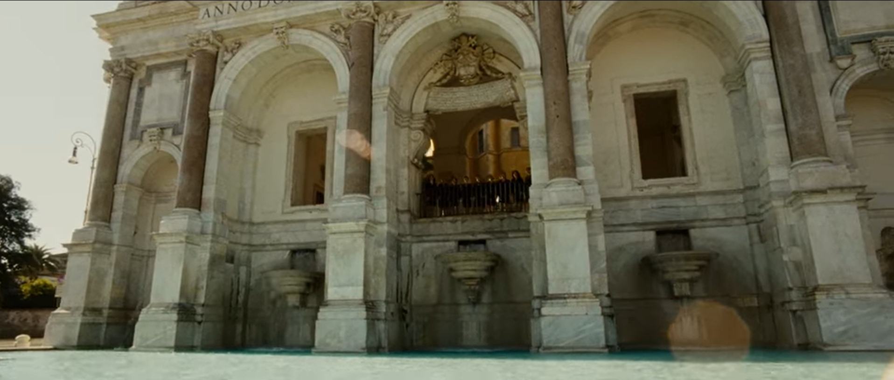
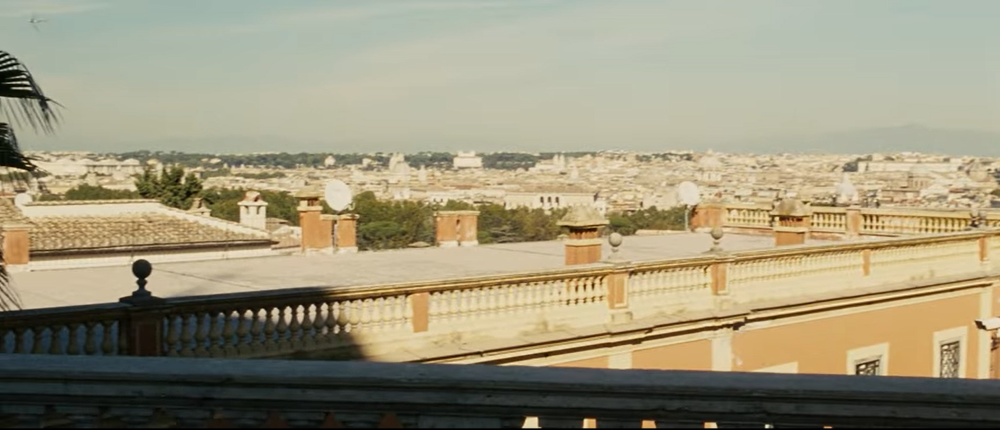
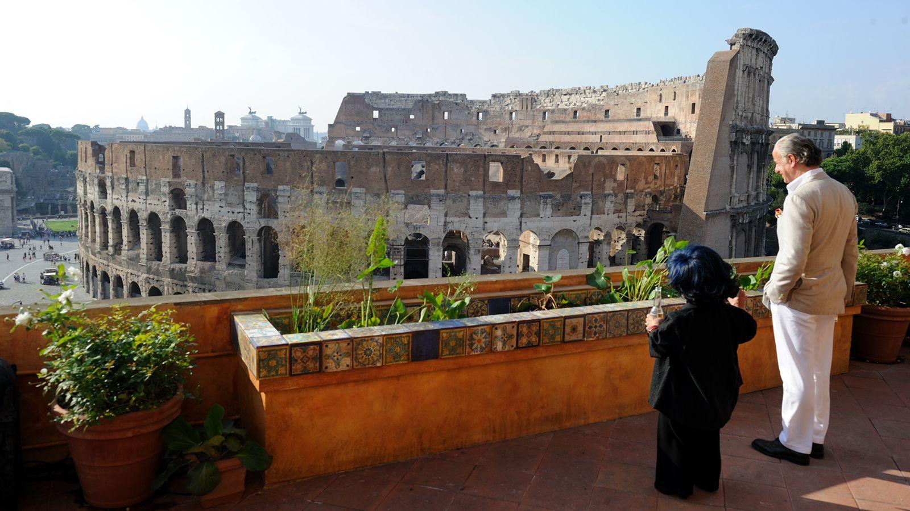
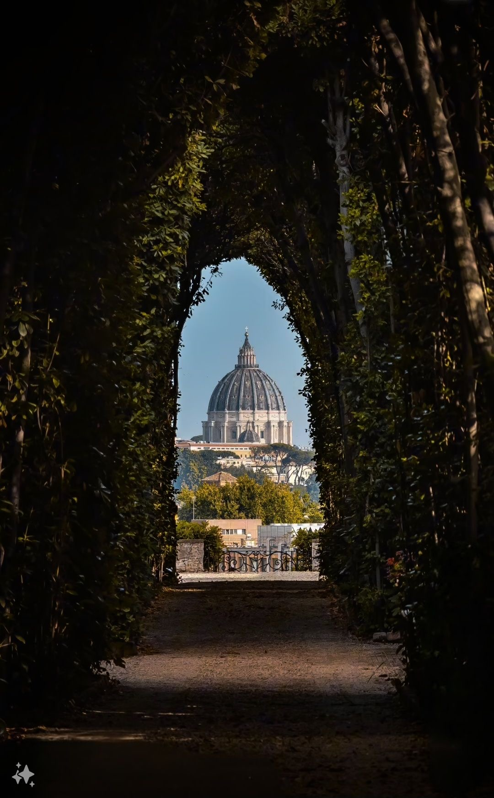
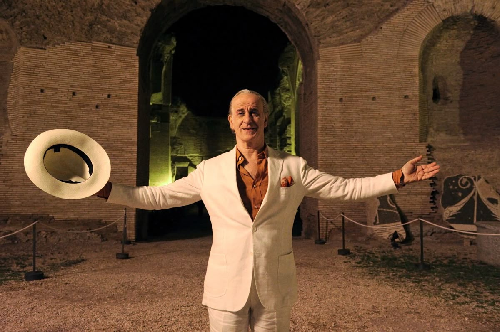
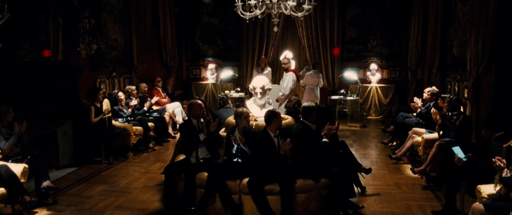
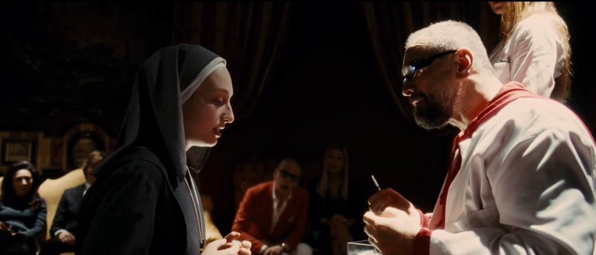

La Grande Bellezza
Paolo Sorrentino
"I was looking for the great beauty, but I didn't find it. This is how it always ends. With death. But first, there was life. Hidden beneath the blah, blah, blah. It is all settled beneath the chitter chatter and the noise. Silence and sentiment. Emotion and fear. The haggard, inconstant flashes of beauty. And then the wretched squalor and miserable humanity. All buried under the cover of the embarrassment of being in the world."
Beauty on the surface
The Great Beauty is precisely that — beauty on the surface, artificial, put on display. Sorrentino isn't searching for meaning behind it; he revels in the surface itself: the glitter of the parties, the gloss of Rome, the flawlessness of emptiness. There is no depth here to be uncovered — only a shining shell, and in that shine lies everything. Beauty doesn't conceal meaning; it replaces it.
Beneath the shell
In The Great Beauty, Rome is a labyrinth through which the protagonist wanders — a man who has lost his spirituality and is searching for it anew. Sorrentino's film is not about beauty: it is about the search for meaning in a world where everything has turned into decoration and pretense. Rome here is not a city but the protagonist's inner state: his search, his return to the origins where meaning was still alive. And only by rediscovering that meaning does he once again become capable of writing a novel.This website is built the same way — as a labyrinth in which to search for fundamental meanings →

The Janiculum Hill & Fontana dell'Acqua Paola
The film famously opens at the Gianicolo Terrace, where a Japanese tourist collapses from the city's sheer beauty. Before a single word of the story is spoken, Rome has already overwhelmed someone — beauty as a force strong enough to stop a heart.


Jep's Terrace & the Colosseum
Let's start out from Jep Gambardella's place. Gambardella is the main character. Sorrentino chose as his home a penthouse in a palazzo facing Piazza del Colosseo at no. 9. It is located on the southern side of the Flavian Amphitheatre, the most famous monument in the world.
Nightfall transitions the party to the private terrace of Jep Gambardella — overlooking the Colosseum and the ruined Temple of Claudius — setting the stage for his decadent social circle.

The Aventine Hill
Jep and his friends wander the quiet, cobblestone streets, gazing at the Basilica of Santa Sabina and the famous keyhole at the Villa of the Priory of Malta, which frames a magical view of St. Peter's Dome — beauty captured in a single, secret aperture.

The Baths of Caracalla
"The Great Beauty" is a film where dreams and reality meet, as reflected in the photographic exhibition under the loggia of Villa Giulia or in the trick of the disappearing giraffe, at the Baths of Caracalla — at the very heart of archaeological Rome.
Before departing Rome, an old friend comes to Jep to say farewell. Having seen through the city's facade of pretense and apathy, he leaves behind everything — except for Jep, the only man he found who stood unbroken against the vanity of the world.

Palazzo Brancaccio
The botox party is one of the clearest visual condensations of this: beauty here is literally a trick of needles and fillers, anticipating Jep's final reflection that life and art are "a trick" if they don't reconnect with genuine, lived beauty rather than its hollow image.
The sequence is often called the "botox party" or "beauty cure" scene: a crowd of upper-class Romans, with faces already altered by surgery, gather in an ornate historic interior to receive injections of a supposed miraculous treatment.

Narratives
Reading Rome through the centuries
Three lenses on the places of The Great Beauty — the themes they carry, the kinds of place they are, and the ages that built them. Choose a thread and follow it back to the locations.
Lens 01 · Themes
Explore the narratives that run through Rome and the film
Lens 02 · Typology
Discover the different typologies of Roman places
Lens 03 · Through the centuries
Explore the historical periods that shaped these places
The labyrinth, unfolded
A map of the great beauty
Five places in Rome where Sorrentino lets dreams and reality meet. Choose a passage and wander.
Hover a marker to preview the place · click it to enter the passage